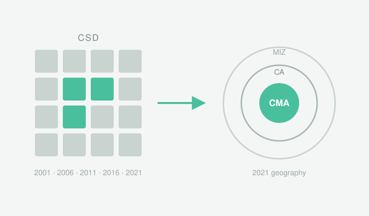
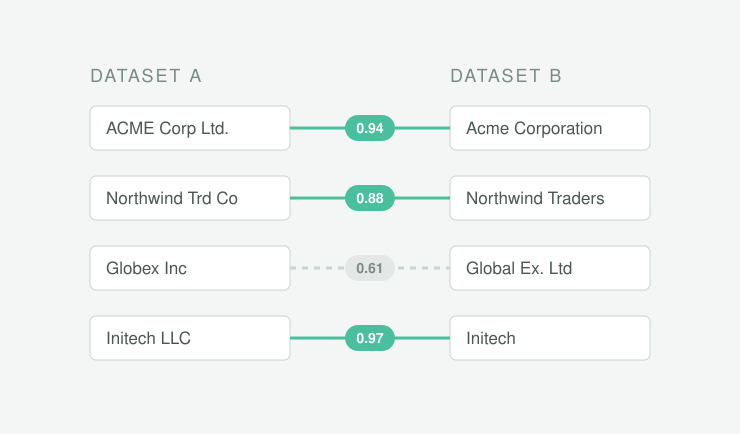
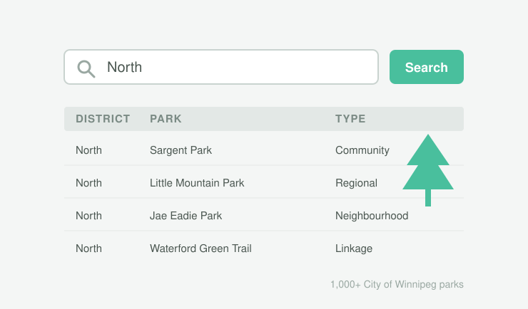

CSD → CMA Crosswalk
Python crosswalk mapping Canadian Census Subdivisions across five census cycles (2001–2021) to their 2021 CMA, CA or MIZ classification.
With a passion for data-driven decision making, I strive to create meaningful impact in higher education and institutional development. Currently, I develop research methodology, build data pipelines, reconcile large administrative datasets, and communicate documented findings with academics tackling labor economics reasearch at New York University's Social Science Division.
 Excel
Excel Python
Python Claude
Claude Figma
Figma Power BI
Power BI GitHub
GitHub Obsidian
Obsidian
Python crosswalk mapping Canadian Census Subdivisions across five census cycles (2001–2021) to their 2021 CMA, CA or MIZ classification.

Entity-resolution pipeline that matches employer records across two inconsistently named administrative datasets, built for labour-economics research.

React app that searches 1,000+ City of Winnipeg parks by district and exports the results, built on the City’s open data. Red River College assignment, 2023.